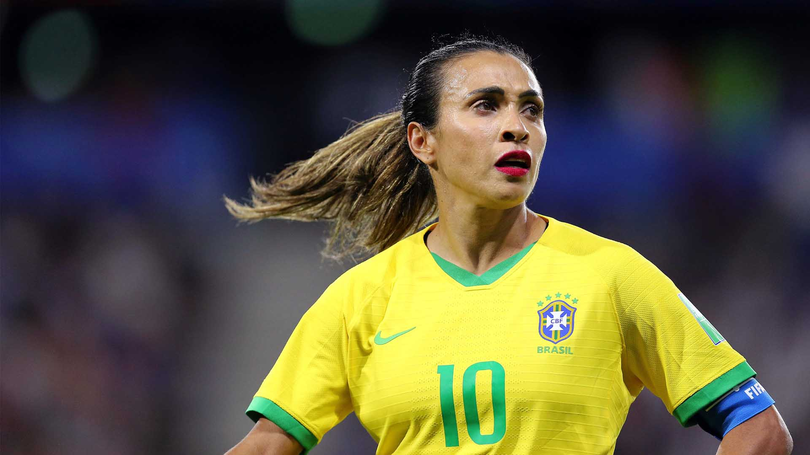

Recentemente, a desigualdade de gênero tem se tornado um assunto muito comentado nas mídias digitais e impressas. A luta pela igualdade entre homens e mulheres sendo livres para fazer suas próprias escolhas, usufruindo das mesmas responsabilidades, direitos e oportunidades, intensificou-se em meados do século XX, impulsionada, principalmente, pelo movimento feminista. O assunto se tornou tão relevante nos últimos tempos que se tornou pauta da Rio+20, quando os países membros da Organização das Nações Unidas (ONU) definiram os Objetivos de Desenvolvimento Sustentável a serem alcançados até 2030 e dentre eles, o assunto em questão.
Música para meus ouvidos: Marília Mendonça
A cantora Marília Mendonça, que recentemente após uma tragédia sofrida em seu avião veio a falecer, era uma grande ativista no cenário de busca pela igualdade de gênero no Brasil. O que é igualdade de gênero? É um conceito que busca a igualdade e empoderamento dos gêneros, visto que atualmente é possível observar que nossa sociedade privilegia o gênero masculino em diversos pontos. E sobre isso, a cantora era uma enorme inspiração, chegando a ser uma grande representante do movimento feminejo, termo que ficou conhecido a partir da presença de mulheres no sertanejo com temáticas de respeito, direitos e até denúncias, algo até então inusitado.
Conhecimento igual para todos: Márcia Barbosa
Márcia Barbosa, física e ativista, é uma grande inspiração quando falamos do tema igualdade de gênero. Comendadora da Ordem Nacional do Mérito Científico e membro titular da Academia Brasileira de Ciências. Ganhou notoriedade no cenário brasileiro e mundial com o seu trabalho que evidencia as moléculas de água e seu reaproveitamento, sendo distinguida posteriormente como uma das sete cientistas que moldam o mundo, escolhida dentre uma série de pesquisadores que impactaram a ciência mundial com seus trabalhos realizados. Márcia comenta que, ““Eu sentia na pele que precisava fazer o dobro ou triplo para ser notada e conseguir estar onde meus colegas tinham chegado.” diz ela, em relação a discrepância entre alunos homens e mulheres quando começou a cursar Física. Para ela, há um estigma muito forte sobre a capacidade feminina de lidar com a pressão e a liderança, algo que pode ser combatido com o estudo, com a valorização acadêmica das profissionais e, sobretudo, da mudança de uma cultura enraizada.
Um toque de igualdade: Marta
Marta já foi escolhida como melhor futebolista do mundo por seis vezes, sendo cinco de forma consecutiva. Um recorde não apenas entre mulheres, mas também entre homens. Desde 2015 é a maior artilheira da história da Seleção Brasileira (contando a Masculina e a Feminina) com 116 gols. No duelo entre Itália e Brasil, pela fase de grupos da Copa do Mundo de Futebol Feminino de 2019 marcou seu décimo sétimo gol, consagrando-se como a maior artilheira da Copa do Mundo de Futebol Feminino e a pessoa com o maior número de gols em Copas do Mundo (entre homens e mulheres). Ela superou Pelé, com 95 gols marcados com a camisa da seleção e entrou na calçada da fama do Maracanã, sendo a primeira e, até agora, a única mulher a deixar a marca dos pés neste local. A jogadora além de ser uma das maiores jogadoras da história, é também uma defensora dos direitos de igualdade de gênero. Marta já chegou a usar chuteira preta com símbolo de igualdade de gênero e a tapar com seu cabelo a fornecedora de materiais esportivos oficial da seleção brasileira, Nike. Atitudes como essa repercutem muito, o que tem ajudado de uma forma surpreendente a causa e continuará incentivando diversas mulheres a continuarem firmes em busca de seus direitos.
Mas é só isso?
A luta ainda continua e nós precisamos ser realistas, mulheres inspiradoras como Clarice Lispector, Tarsila do Amaral, Luiza Helena Trajano e Cristina Junqueira são grandes exemplos a serem seguidos nessa luta que NÃO acabou, precisamos abrir os nossos olhos para que no futuro haja um mundo com igualdade e direitos estabelecidos para TODOS. A Amazona está junto com todas as mulheres que lutam todos os dias no seu cotidiano e muita das vezes sequer são vistas, nós estamos com vocês, em busca de um mundo melhor!